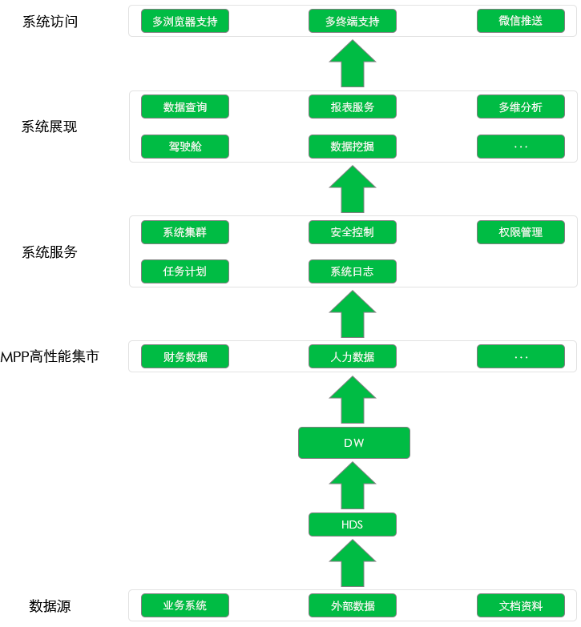

昊合商业智能
服务概览
服务特色
昊合商业智能解决方案包括数据可视化分析工具和MPP数据集市俩部分，均基于JAVA语言开发，具有易学易用、高性能、自服务以及快速部署等特点，能为企业 各级人员提供最合适的商业智能解决方案，帮助企业用户构建敏捷的数据化运营体系，以最直观的形式快速的里阿杰企业的经营状态，为企业的经营决策提供数据支撑，重复的发挥数据的最大价值。
昊合数据可视化分析工具是一块先进的额BI数据分析软件，提供可视化设计工具帮助用户灵活搭建数据分析仪表盘、决策驾驶舱、动态多维图表以及各类商业智能应用。MPP数据集市是一款海量数据存储、处理的软件。数据集市可单机部署，亦可基于PC服务器进行分布式扩展，利用列存储和内存计算，实现从千万到百亿级数据分析秒响应，帮您轻松应对大数据时代的挑战。
昊合商业智能解决方案技术架构

快速交付
传统BIF系统的经典架构，底层是数据源，接着是ETL（抽取、转换、装载）到数据仓库形成EDW层，为了提高分析速度一般还会把数据做预先汇总形成轻度或者高度汇总层，或者抽取到数据集市做这个工作，或者抽取到CubeServer去打Cube，然后在通过前端展现工具让用户数据分析。整个系统由N个产品组成，成本一般比较昂贵，建设周期一般在半年以上甚至跨年，做好项目计划，一般是瀑布试的实施方法，每步都涉及到比较重要的数据形态的转变.
- 昊合商业智能平台是一代敏捷性BI软件，不对数据进行汇总，而是直接基于细节数据，打牌传统BIF软件建二次表、Cibe、复杂模型的漫长流程，建模工作轻量级，通过人性化拖拽可快速生成分析报表，成本和上线周期仅为传统BIF的四份之一。
-

自助服务
商业智能应用的现状: 频繁变化的业务需求，业务用户常常抱怨IT部门无法满足他们需求，现在实现商业智能（BI）系统太复杂不易于使用。一方面是业务人员对数据分析的积极渴望，一方面是技术部门没有足够的能力或便利满足业务部门的需求。另外业务人的水平合分析思路逐渐提升，当看到一场或者引起关注的的变化时，往往希望进行即席的、深入的分析以获取现象背后的原因。
针对这些现状，昊合商业智能平台提供了探索式BI或自主式BI的解决方案。对于业务分析人员，在昊合商业智能平台能看到是一个个被IT人员封装、发布的BI分析主题。每个分析主题下涵盖了该主题可能会用到的所有数据。这些数据都是业务化了的，它们的名称都被转义成业务名，它们的代码表都已经被绑定在一起，有的甚至和业务人员熟悉的Excenl表样绑定起来。
在使用昊合商业智能分析模块进行数据分析时，需要的操作仅是点击与拖拽。所有这些操作的标准就是所见即所得和业务人员容易操作。无论是基本数据的找数据、设计表样；进阶的过来、排序、钻取；还是高级的维度与指标自由切换、组件联动分析、管理驾驶舱，一切只与业务有关、与分析有关，而与数据库的知识或技术无关。信息部门从传统BI工具无尽的需求沟通中解放出来，而业务热源做分析从不在求人。
以上这些泰索式或自主式的应用帮助业务人员能够按照自己的分析思路进行分析，而不被数据等问题打断，同事自己对数据的及时性合准确性负责，这样也大大提高业务人员的满意度。由于大部分的数据分析应用由业务人员的自行开发，开发应用的关联人员减少，整个机管理更加扁平化，而响应时间却大大缩短，企业的经营管理能力和战略决策水平随之提升。相比传统的而商业智能喜用，自服务商业智能系统更优化，更有效率。
实时决策
-
昊合移动BIF可以无缝支持PC、iPhone、iPad合Android，并子啊这些终端设备上保持一致。易用的用户体验。您可以随时随地通过移动设备进行数据分析、从而做出正确决策。用户在PC端设计的仪表盘、报表等分析功能通过简单喷纸即可在移动端以后适合的方式完美的呈现。
在旅途中，在会议间歇，企业的决策者合管理者通过移动BI动动物质就能掌握公司动向，即刻讲反馈信息传达到业务部们，彻底冲破了传统数据分析智能在办公室做的时空枷锁i，并是分析与决策没有距离。 -

海量数据秒级响应
昊合商业智能平台的底层有一个支持列存储、内存计算和分布式计算的高性能数据集市，可在秒级速度内处理百亿甚至更多的数据，帮您轻松应对大数据时代的挑战。
- 列存储(Colum-Based)
- 内存计算